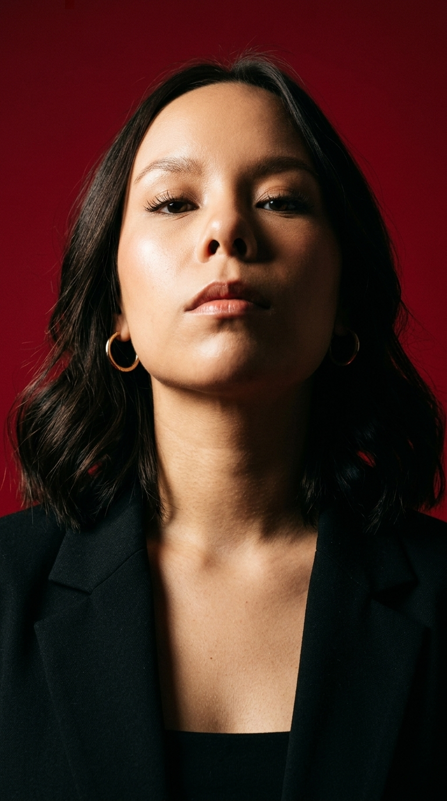

Presentación
¡Hola! Soy Ximena, estudiante apasionado/a por la fotografía de retrato. Me enfoco en capturar la esencia de las personas, jugando con la luz natural y las composiciones. Te invito a explorar mis trabajos.
Mis habilidades y conocimientos
Fotografía
- Retrato en exterior e interior
- Manejo de cámara profesional
- Manejo de luz natural
- Composición y encuadre
Edición / Software
- Adobe Lightroom
- Adobe Photoshop
- Retoque digital de piel
- Corrección de color
Blandas y Web
- Dirección de modelos / personas
- Atención al detalle
- Creatividad visual
- HTML / CSS básico